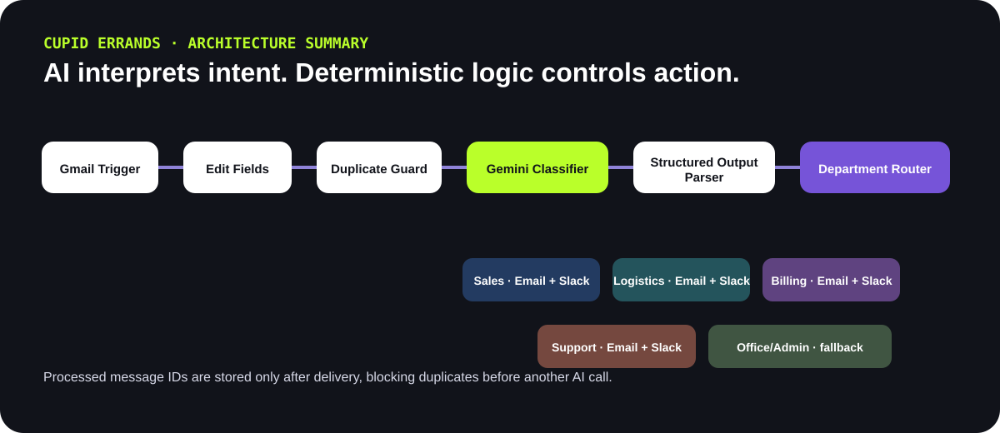
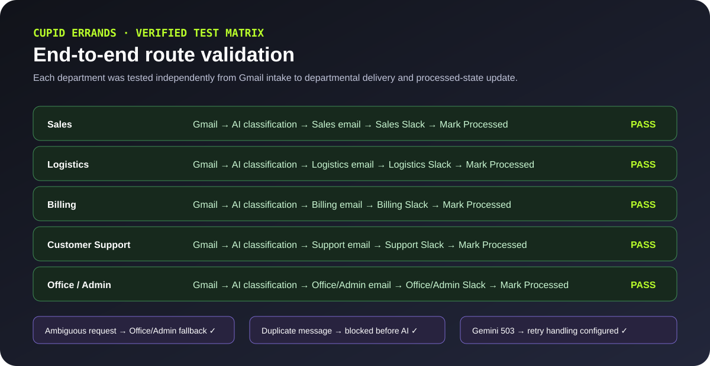
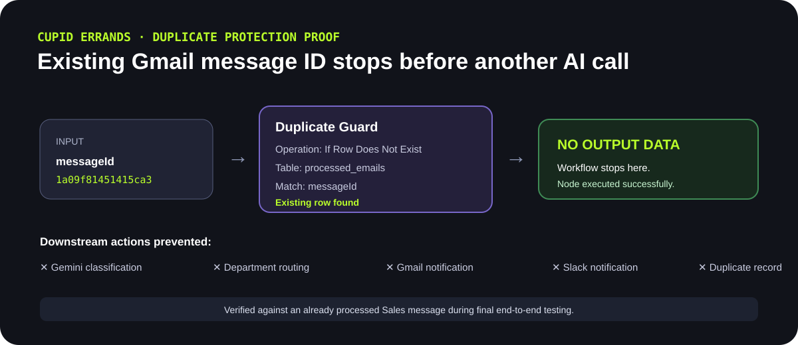

Cupid Errands Intelligent Email Routing
Context-aware customer-email classification with deterministic department routing, Gmail and Slack delivery, duplicate prevention, fallback handling, processed-state tracking and retry protection for transient AI-provider failures.
Watch the system work end to end.
The demo walks through the business problem, workflow architecture, controlled Gmail intake, Gemini classification, deterministic routing, Gmail and Slack outputs, fallback handling, retry configuration and duplicate protection.
If the embedded player is blocked by your browser, open the Tella video directly ↗.
AI interprets. Workflow logic controls the action.
The LLM classifies unstructured intent, but the downstream execution remains explicit and deterministic inside n8n.


AI handles interpretation. Deterministic workflow logic controls the action.
Duplicate processing stops before another AI call.

Controls verified during testing
- Dedicated Cupid-Test Gmail label limits trigger intake.
- Processed message IDs are checked before classification.
- Ambiguous requests fall back to Office/Admin.
- Gemini 503 high-demand failure led to retry-on-fail configuration with three attempts and a delay.
- Successfully routed messages are written to processed state only after departmental delivery.
Five operational destinations, independently validated.
Designed for inspection, not magic.
- AI is used for contextual interpretation, not uncontrolled execution.
- Structured output creates a machine-readable boundary between the LLM and the Switch router.
- Duplicate prevention occurs before expensive or noisy downstream actions.
- Office/Admin is the safe fallback for unclear requests.
- Retry handling was added after observing a real transient 503 from Gemini during final testing.
Portfolio implementation tested with controlled test data. No client production-volume claims are made.